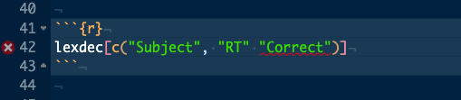
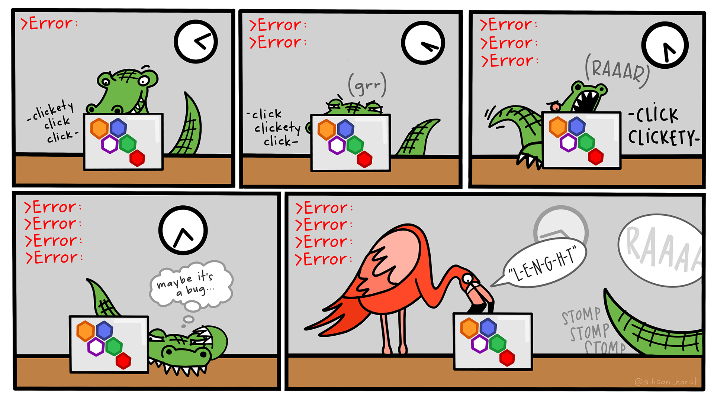
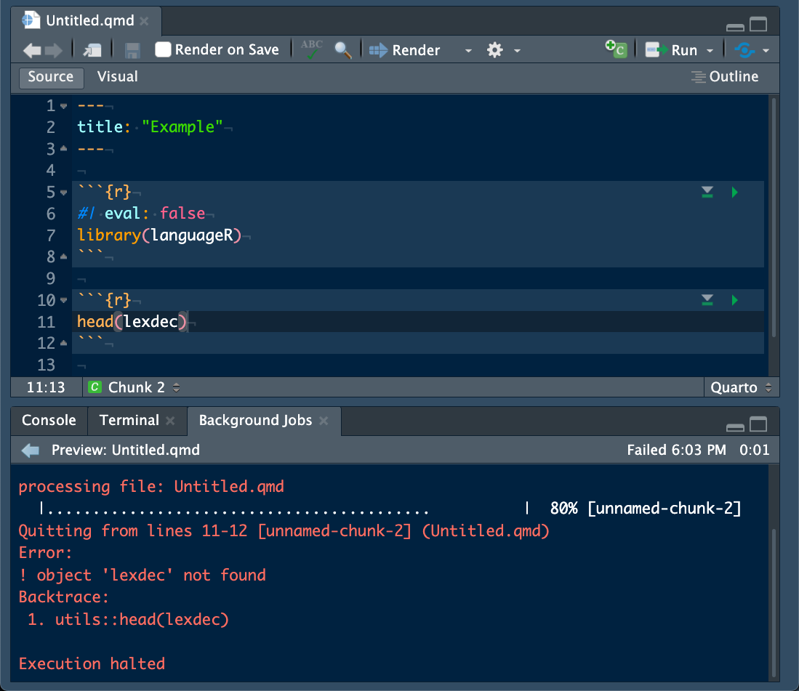
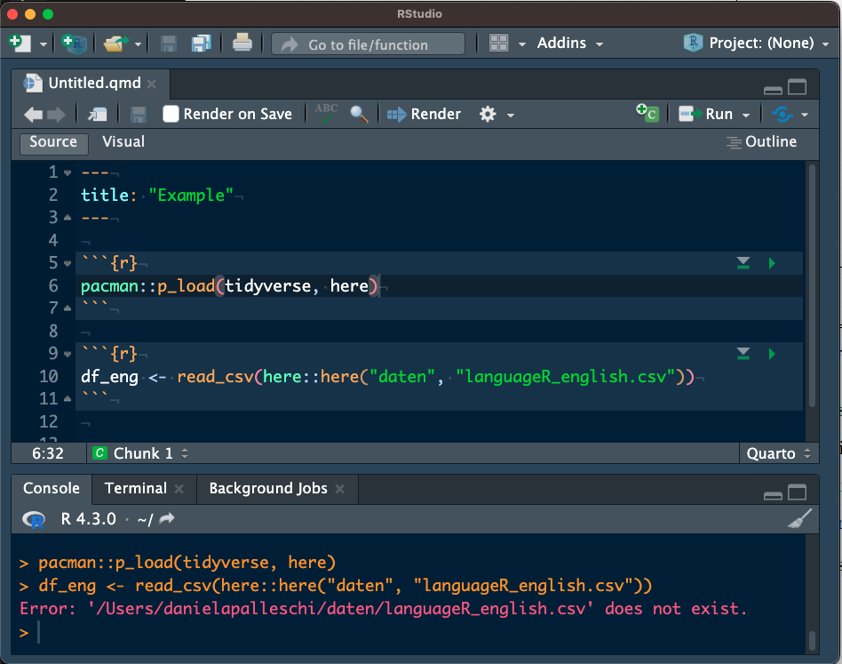
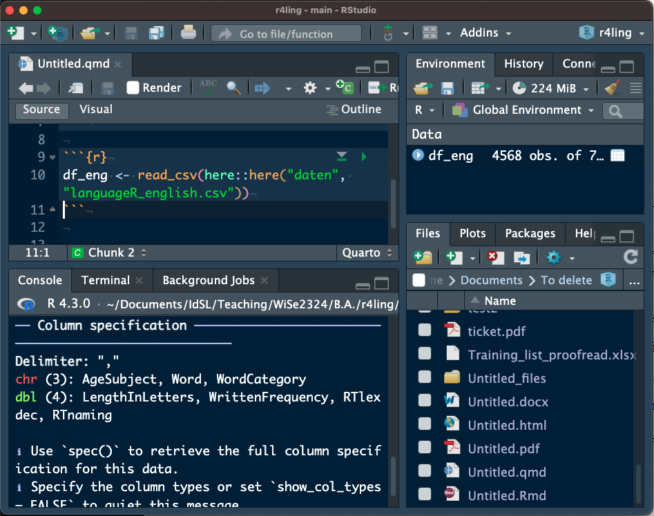

p_load(tidyverse,
janitor,
here)Error in p_load(tidyverse, janitor, here): could not find function "p_load"Was tun, wenn etwas schief geht?
Die Ressourcen, die ich für dieses Kapitel verwendet habe, waren Abschnitt 3.6 “Troublshooting Error Messages” aus dem Webbuch R for Graduate Students von Wendy Huynh (2019), und Perkel (2023).
In diesem Kapitel werden wir lernen…
Das folgende Code-Stück gibt uns den ersten Fehler:
p_load(tidyverse,
janitor,
here)Error in p_load(tidyverse, janitor, here): could not find function "p_load"Was ist das Problem mit dem obigen Code? Die Funktion p_load() konnte nicht gefunden werden, weil sie aus dem Paket pacman stammt, aber wir haben dieses Paket noch nicht geladen. Das ist der Grund, warum wir pacman::p_load() schreiben, wenn wir unsere Pakete einladen.
Um die Funktion p_load() zu benutzen, müssen wir angeben, dass sie aus dem Paket pacman stammt, wie wir es in diesem Buch immer getan haben (oder wir könnten dieser Zeile library(pacman) voranstellen).
pacman::p_load(tidyverse,
janitor,
here,
languageR)Fehler- oder Warnmeldungen sind bei der Programmierung im Allgemeinen sehr häufig. Programmiersprachen sind sehr wortgetreu, sie versuchen normalerweise nicht zu erraten, was Sie wollen. Das bedeutet, dass selbst der kleinste Fehler Ihren Code zerstören kann. Es kann extrem frustrierend und demotivierend sein, wenn man solche Fehlermeldungen erhält. Es mag ein gewisser Trost sein zu wissen, dass jeder Fehler macht, sogar Profis. Mit zunehmender Erfahrung werden Sie lernen, Codefehler effizienter zu erkennen und zu beheben. Heute lernen wir einige Ressourcen kennen, die Ihnen auf diesem Weg helfen können.

RStudio erkennt in der Regel Syntaxfehler und teilt Ihnen vor der Ausführung Ihres Codes mit, ob Sie etwas übersehen haben. Das folgende Code-Stück gibt zum Beispiel eine Fehlermeldung aus.
lexdec[c("Subject", "RT" "Correct")]Error: <text>:1:26: unexpected string constant
1: lexdec[c("Subject", "RT" "Correct"
^RStudio erkennt diesen Syntaxfehler und visualisiert ihn für Sie, wie in Abbildung 12.2. Wir sehen ein rotes “X” neben der Zeilennummer (42) sowie eine rote Unterstreichung für den problematischen oder unerwarteten Code.

Die Syntax von "Correct" selbst ist nicht falsch, aber sie ist unerwartet, weil ein Komma nach der vorherigen Zeichenkette fehlt. Erinnern Sie sich, dass c() eine Liste von Argumenten zu einem Vektor kombiniert, und diese Argumente müssen durch ein Komma getrennt werden. Fehlende Kommas sind ein sehr häufiger Grund für fehlerhaften Code, also halten Sie die Augen offen!

Syntaxfehler sind sehr häufig und treten auf, wenn Sie ein Komma oder eine Klammer ausgelassen haben, ein Objekt, eine Variable oder einen Funktionsnamen falsch geschrieben haben oder sogar eine Funktion aufgerufen haben, ohne vorher das entsprechende Paket zu laden (wie wir es oben mit p_load() getan haben).
Im Folgenden erhalten wir eine informative Fehlermeldung, die uns sagt, dass eine unerwartete schließende eckige Klammer vorhanden ist.
lexdec[c("Subject", "RT", "Correct"]Error: <text>:1:36: unexpected ']'
1: lexdec[c("Subject", "RT", "Correct"]
^lexdec[c("Subject", "rt", "Correct")]Error in `[.data.frame`(lexdec, c("Subject", "rt", "Correct")): undefined columns selectedlexdec[c("Subject", "RT", "Correct"])Error: <text>:1:36: unexpected ']'
1: lexdec[c("Subject", "RT", "Correct"]
^Wenn wir im Tidyverse arbeiten, erhalten wir etwas andere (und manchmal informativere) Fehlermeldungen.
lexdec |>
select("Subjct", "RT", "Correct")Error in `select()`:
! Can't subset columns that don't exist.
✖ Column `Subjct` doesn't exist.Hier wird uns genau gesagt, wo das Problem liegt: Wir haben keine Variable namens Subjct. Dies ist eindeutig ein Tippfehler. Unten erhalten wir einen ähnlichen Fehler.
lexdec |>
select("subject", "RT", "Correct")Error in `select()`:
! Can't subset columns that don't exist.
✖ Column `subject` doesn't exist.Dieses Mal ist der Tippfehler auf die Groß- und Kleinschreibung zurückzuführen, denn unsere Variable “Subjekt” beginnt mit einem großen “S”.
Einige häufige Syntaxfehler sind:
Lexdec$Subject statt lexdec$Subject)Länge(lexdec) statt Länge(lexdec))
Das Rendern eines Quarto-Dokuments kann auch Fehlerwarnungen ausgeben, wenn Ihr Code ausgeführt wurde. Vielleicht lief Ihr Code perfekt, wenn Sie ihn direkt im Skript abgearbeitet haben, aber er funktioniert nicht, wenn er gerendert wird. Diese Fehlerwarnungen sind oft darauf zurückzuführen, dass Ihr Code nicht linear geschrieben wurde (d.h. jeder Codeabschnitt sollte vor dem nächsten ausgeführt werden), oder dass Codeabschnitt-Optionen die Ausführung eines erforderlichen Codeabschnitts blockieren (z.B. durch die Einstellung eval: false). Glücklicherweise enthalten die Fehlerwarnungen Informationen darüber, welcher Codechunk problematisch ist. Manchmal ist der Fehler auf einen Fehler in diesem Codechunk zurückzuführen oder darauf, dass ein vorheriger Codechunk nicht ausgeführt wird, z.B. wenn Quarto ein erforderliches Paket nicht lädt oder Daten nicht lädt oder ein neues Objekt erzeugt. Ein solches Beispiel sehen wir in Abbildung 12.5.

Sehen Sie sich zunächst die Codeabschnitte in Abbildung 12.5 an. Der erste Codeabschnitt enthält die Option eval: false, und wird daher beim Rendern des Skripts nicht ausgeführt. Das bedeutet, dass das Paket languageR nicht geladen wird. Der zweite Codeabschnitt versucht dann, die ersten 6 Zeilen des Datensatzes lexdec zu drucken, der Teil des Pakets languageR ist, aber da dieses Paket beim Rendern nicht geladen wurde, erhalten wir die Warnung: Objekt 'lexdec' nicht gefunden. Dies ist insofern informativ, als es uns sagt, dass es ein Problem beim Finden von lexdec gibt, aber es sagt uns nicht explizit, dass es daran liegt, dass wir das Paket nicht geladen haben. Bei solchen Fehlern müssen wir manchmal nachforschen, indem wir unseren Code untersuchen.
Schauen wir uns auch die Fehlerwarnung genauer an. In diesem kurzen Skript können wir leicht erkennen, wo das problematische lexdec ist, aber vielleicht haben wir ein sehr langes Skript geschrieben und es ist nicht klar, wo die Quelle des Problems liegt, wenn wir nur den Fehlertext betrachten. Wir erhalten auch Informationen darüber, wo Quarto auf ein Problem gestoßen ist: Qutting from lines 11-12 [unnamed-chunk-2] (Untitled.qmd). Wir erhalten die Zeilennummer und die Nummer des Codeabschnitts. Dies ist eine sehr nützliche Information, wenn wir ein längeres Skript mit vielen Codeabschnitten haben.
Ein häufiger Fehler beim Laden von Daten ist auf einen falschen Dateipfad zurückzuführen. Da wir in diesem Kurs innerhalb eines RProjekts arbeiten, ist dies häufig darauf zurückzuführen, dass wir nicht innerhalb unseres RProjekts arbeiten. Erinnern Sie sich, dass wir das here-Paket verwenden, weil es das Arbeitsverzeichnis relativ zu dem Ordner setzt, der unser RProjekt enthält. Wenn Sie nicht in einem RProjekt arbeiten oder sich in einem falschen RProjekt befinden, ist der Dateipfad nicht korrekt. In einem solchen Fall kann es zu einer Warnung wie in Abbildung 12.6 kommen, wo wir die Warnung "Users/danielapalleschi/daten/langaugeR_english.csv" existiert nicht erhalten. Diese Aussage ist richtig, da dieser Dateipfad auf meinem Rechner tatsächlich nicht existiert. Beachten Sie, dass oben in der Mitte des Bildes “RStudio” steht und rechts daneben “Project: (None)”. Beides bedeutet, dass Sie nicht innerhalb eines RProjekts arbeiten, d. h. Ihr Arbeitsverzeichnis ist nicht relativ zu dem Ordner, der Ihr RProjekt enthält. Wenn Sie feststellen, dass Sie in einem falschen oder gar keinem RProjekt arbeiten, können Sie das richtige RProjekt öffnen, indem Sie auf die Stelle klicken, an der “Project: (None)” steht, wo die letzten RProjekte angezeigt werden.

Vergleichen Sie dies mit Abbildung 12.7. Das gleiche Skript wird ohne Warnung ausgeführt, und Sie können sehen, dass wir innerhalb eines RProjekts mit dem Namen r4ling arbeiten (Sie können das main ignorieren, das hängt mit dem Projekt zusammen, das Git verwendet), und die csv-Datei wird ohne Warnung geladen.

Wenn Sie auf Rendering-Probleme stoßen, empfehle ich Ihnen, die folgenden Schritte zu befolgen:
eval: false, das ausgeführt werden muss?
Session > Restart R)
Session > Restart R) und führen Sie jeden Codechunk vom Anfang Ihres Skripts bis zum problematischen Codechunk aus, wobei Sie genau auf die Codechunk-Optionen achten. Sehen Sie, was das Problem ist?
Wenn Sie nach diesen Schritten nicht in der Lage sind, den Fehler zu lokalisieren und zu beheben, würde ich Sie weiterhin um Hilfe bitten. Wir werden uns nun einige Stellen ansehen, an denen Sie Antworten auf Fehler finden können, die Sie nicht ohne weiteres selbst lösen können.
Für manche Probleme ist es schwierig, eine Lösung zu finden. Glücklicherweise gibt es eine sehr aktive R-Gemeinschaft im Internet. Es gibt viele Quellen für Hilfe, aber wir werden uns hier die häufigsten und hilfreichsten ansehen.
Im Zweifelsfall: Google! Wenn Sie die Fehlermeldung, die Sie erhalten, in Google eingeben, erhalten Sie in der Regel eine Vielzahl von Antworten. Je nachdem, wie häufig dieser Fehler auftritt und wie technisch die Erklärung ist, die Sie finden, können diese Antworten hilfreich sein oder auch nicht. Möglicherweise finden Sie einige Blogbeiträge oder Forenbeiträge, in denen das Problem und mögliche Lösungen diskutiert werden. Dies ist ein guter erster Schritt, um das Problem zu lösen.
Stack Overflow ist eine Online-Community für Entwickler mit vielen Forenbeiträgen zu R-Programmierproblemen. In der Regel finden Sie einen Thread, in dem jemand das gleiche Problem hatte wie Sie, und mehrere andere antworten mit möglichen Lösungen. Dies kann eine großartige Möglichkeit sein, zu lernen und Lösungen zu finden, und wenn Sie ein Problem googeln, werden Sie normalerweise zu einem Stack Overflow-Thread geführt. Wenn Sie wirklich nicht weiterkommen, können Sie sogar Ihre eigene Frage stellen! Dazu müssen Sie ein Konto erstellen.
Denken Sie daran, dass es eine Fülle von Dokumentationen für Pakete (und Funktionen) gibt. Wenn Sie bemerken, dass ein Code-Stück einen Fehler auslöst, versuchen Sie, die Hilfeseite für das entsprechende Paket oder die Funktion (?Paket oder ?Funktion in der Konsole) aufzurufen. Alternativ können Sie auch den Namen des Pakets oder der Funktion in Google eingeben, um die Online-Dokumentation zu finden, die Ihnen helfen könnte, besser zu verstehen, was die Funktion erwartet, und dies mit dem zu vergleichen, was Sie ihr gegeben haben.
Chatbots work best for small, discrete programming tasks, such as loading data, performing basic data manipulations and creating visualizations and websites.
— Perkel (2023)
Obwohl ich ChatGPT selbst nicht oft benutze, habe ich von weniger erfahrenen R-Benutzern gehört, dass es beim Auffinden von Syntaxfehlern ein Lebensretter sein kann. Ich schlage ChatGPT erst zum Schluss vor, denn obwohl es bei Syntaxfehlern sehr effizient ist, kann man seinen Code am besten verbessern, wenn man lernt, einfache Fehler schnell zu erkennen und zu lokalisieren, ohne sich auf die KI verlassen zu müssen. Es kann jedoch von großem Vorteil sein, Zeit zu sparen, wenn Sie das Problem in Ihrem Code einfach nicht erkennen können, und ChatGPT liefert detaillierte Beschreibungen dessen, was es für das Problem hält und wie der vorgeschlagene Code das Problem behebt. Dies kann ein wertvolles Lernmittel sein.
Das Kopieren und Einfügen von Code ist sehr üblich (Sie werden in der Regel nicht ein ganzes Skript von Grund auf neu schreiben). Wichtig ist, dass Sie Ihren Code verstehen, denn das ist der beste Weg, um ihn schnell zu reparieren, wenn etwas schief läuft, und ChatGPT, Google, Stackflow und dergleichen werden Ihnen nicht immer helfen können. ChatGPT wird Ihnen zum Beispiel nicht sagen können, dass Sie einen Variablennamen mit Kamelhülsen geschrieben haben (cameCaseLooksLikeThis), wenn Ihre Variablen mit Schlangenhülsen benannt sind (snake_case_looks_like_this), oder wenn es einen anderen Tippfehler gibt, der nichts mit der Syntax zu tun hat. Wenn Sie in der Lage sind, Fehler-/Warnmeldungen zu interpretieren und die Ursache des Problems ausfindig zu machen, ist das der schnellste Weg zur Lösung.
Dennoch können Syntaxfehler für neue Programmierer schwierig zu erkennen sein. Wenn man nicht weiterkommt, kann es hilfreich sein, ChatGPT zu benutzen, um nicht nur eine Lösung zu erhalten, sondern auch eine detaillierte Beschreibung der Fehlerquelle und -lösung. Um ChatGPT auszuprobieren, müssen Sie ein Konto haben.
The temptation to copy and paste code snippets from ChatGPT or Stackoverflow is real, but true mastery lies in comprehension.
— Travis Oliphant ((teoliphant?)) October 20, 2023
I've copied and pasted a lot of code. But as a programmer, it's your duty to understand.
And to do so, you'll eventually end up in documentation 😉. pic.twitter.com/HWi09tPz6O
Es ist wichtig zu wissen, dass ChatGPT ein Tausendsassa ist, der nichts beherrscht. Das bedeutet, dass es sich mit vielen Themen auskennt, aber kein Experte in einem dieser Themen ist. Der beste Ratschlag in Bezug auf die Verwendung von ChatGPT für Programmierzwecke, den ich gefunden habe, lautet: “Vertrauen, aber überprüfen” (Perkel, 2023). Vertrauen Sie nicht blind auf das, was die KI Ihnen sagt: Sie ist nur so gut wie die Daten, auf denen sie trainiert wurde, und kann überheblich sein und überzeugend klingen. Denken Sie daran, dass “‘[i]m Falle, dass Sie nicht genug wissen, um den Unterschied zwischen etwas Richtigem und etwas, das eigentlich Unsinn ist, zu erkennen, Sie sich in Schwierigkeiten bringen könnten’” (Zitat der Linguistin Emily Morgan von der UC Davis in Perkel, 2023).
Seien Sie also skeptisch gegenüber den Lösungen, die ChatGPT Ihnen anbietet, vor allem, wenn Ihre Probleme komplexer werden. Testen Sie immer, ob der vorgeschlagene Code nicht nur ohne eine weitere Warnung oder Fehlermeldung läuft, sondern ob er auch das erreicht, was Sie erwarten. Nur weil Sie keine Warnung erhalten, heißt das nicht, dass der Code auch das tut, was Sie wollen!
ChatGPT und Datenschutz: Alles, was Sie in ChatGPT eingeben, wird an die Server von OpenAI gesendet und kann für Trainingszwecke verwendet werden. Geben Sie niemals sensible Informationen in ChatGPT ein.
ChatGPT und akademische Integrität: Denken Sie daran, dass der Einsatz von künstlicher Intelligenz im akademischen Umfeld derzeit eine Grauzone ist. Ich empfehle die Verwendung von ChatGPT zur Fehlersuche in bereits fehlerhaftem Code oder zur Unterstützung bei der Lösung komplexer Programmieraufgaben. Schauen Sie sich unbedingt die Empfehlungen für das Umgehen mit Künstlicher Intelligenz in Prüfungen der Humboldt-Universität an .
Darüber hinaus werden LLM (Large Language Models) auf Daten trainiert, die aktuell sein können oder auch nicht. Zum Beispiel wird ChatGPT vielleicht nicht auf der neuesten Version eines Pakets trainiert und ist sich daher möglicherweise der Probleme mit einem veralteten Argument nicht bewusst.
Ein weiteres, allgemeineres Problem bei der Verwendung von ChatGPT oder einem anderen LMM (Large Language Model) ist die Frage, ob es ethisch vertretbar ist, sich zu sehr auf künstliche Intelligenz zu verlassen, bei der wiederholt festgestellt wurde, dass sie rassische und geschlechtsspezifische Vorurteile hat (was sich nicht auf Ihren Code auswirken sollte, aber eine größere Frage bezüglich der Fütterung des Modells ist).
In diesem Kapitel haben wir gelernt…
Hergestellt mit R version 4.3.0 (2023-04-21) (Already Tomorrow) und RStudioversion 2023.9.0.463 (Desert Sunflower).
print(sessionInfo(),locale = F)R version 4.3.0 (2023-04-21)
Platform: aarch64-apple-darwin20 (64-bit)
Running under: macOS Ventura 13.2.1
Matrix products: default
BLAS: /Library/Frameworks/R.framework/Versions/4.3-arm64/Resources/lib/libRblas.0.dylib
LAPACK: /Library/Frameworks/R.framework/Versions/4.3-arm64/Resources/lib/libRlapack.dylib; LAPACK version 3.11.0
attached base packages:
[1] stats graphics grDevices utils datasets methods base
other attached packages:
[1] languageR_1.5.0 here_1.0.1 janitor_2.2.0 lubridate_1.9.2
[5] forcats_1.0.0 stringr_1.5.1 dplyr_1.1.3 purrr_1.0.2
[9] readr_2.1.5 tidyr_1.3.0 tibble_3.2.1 ggplot2_3.4.3
[13] tidyverse_2.0.0
loaded via a namespace (and not attached):
[1] gtable_0.3.4 jsonlite_1.8.8 compiler_4.3.0 tidyselect_1.2.0
[5] snakecase_0.11.0 png_0.1-8 scales_1.2.1 yaml_2.3.8
[9] fastmap_1.1.1 R6_2.5.1 generics_0.1.3 knitr_1.45
[13] htmlwidgets_1.6.2 rprojroot_2.0.3 munsell_0.5.0 pillar_1.9.0
[17] tzdb_0.4.0 rlang_1.1.3 utf8_1.2.4 stringi_1.8.3
[21] xfun_0.42 timechange_0.2.0 cli_3.6.2 withr_3.0.0
[25] magrittr_2.0.3 digest_0.6.34 grid_4.3.0 rstudioapi_0.15.0
[29] hms_1.1.3 lifecycle_1.0.4 vctrs_0.6.5 evaluate_0.23
[33] glue_1.7.0 fansi_1.0.6 colorspace_2.1-0 pacman_0.5.1
[37] rmarkdown_2.25 jpeg_0.1-10 tools_4.3.0 pkgconfig_2.0.3
[41] htmltools_0.5.7